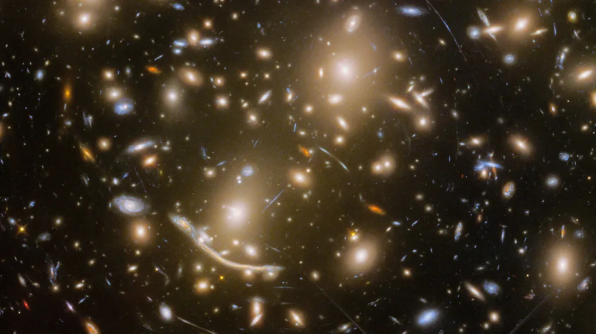

Scientists make 'insanely exciting' star discovery
Jonny Manning, 09.01.2025
Scientists have discovered 44 previously unknown stars which had been hidden behind a cluster of galaxies.
Physicists at Durham University helped discover the stars in the Dragon Arc galaxy nearly 6.5 billion light-years from Earth as part of an international research project.
Pictures show how the stars look during a period known as the cosmic noon - the middle ages of the universe when the most stars were born.
The Durham team was led by physicists David Lagattuta and Mathilde Jauzac, who said discovering the stars was "insanely exciting".
"I see it first of all with the eyes of a little girl, in the sense that what we see is absolutely fascinating and absolutely amazing," said Prof Jauzac.
"Second, as a scientist I see it as such a success for our field."
"We have made so much progress that now we are able to help and work with people, in stellar physics for example, to detect individual stars."
Dragon Arc is located behind a cluster of galaxies called Abell 370.
The cluster is so large it stretches and magnifies the light from Dragon Arc through an effect known as gravitational lensing.
Durham University described the effect as working like a "hall of mirrors of cosmic proportions".
The magnified images were then photographed by the James Webb Space Telescope, which allowed scientist to identify the stars.
Dr Jauzac said the cosmic noon is the period when the number of stars created in the universe is highest, but observing these celestial bodies has proved difficult.
"This very particular type of star we have detected in the Dragon Arc, called red supergiants, are very difficult to observe because they are surrounded by a lot of dust and this dust basically makes them invisible to standard instruments," she said.
"Being able to observe the stars at this epoch would give us a lot of clues about their role, what they are doing and how they enriched the universe at that time."
'Cosmic lighthouse'
Individual stars outside of the Milky Way have been observed before but usually only one or two at a time.
Dr Lagattuta said the sheer number of stars found was "quite special" as it allowed scientists to extract properties of the entire stellar population more easily and accurately.
Gravitational lensing also provides information about the mass of Abell 370 and the dark matter within it.
"We can use these stars as a kind of cosmic lighthouse to see where the dark matter is and how much there is, giving us new information about the substance that holds the universe together," he added.